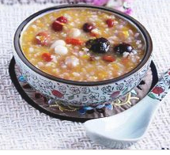
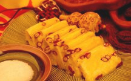
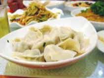
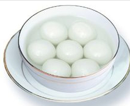

Laba porridge |
Nel giorno del Festival Laba, c'è l'usanza di mangiare il porridge Laba tra i cinesi. Bere il porridge di
Laba ha una storia di migliaia di anni nel nostro paese e il porridge di Laba è anche chiamato il pasto di
tutti. Poiché alla fine del primo anno i raccolti sono stati raccolti e l'agricoltura è debole, le persone
vanno in natura per cacciare animali e li usano per adorare antenati e divinità, pregare per la longevità,
evitare disastri e accogliere il buon auspicio, che è chiamato sacrificio di cera. Il primo porridge di Laba
veniva cucinato con fagioli rossi, poi si è evoluto e ha aggiunto caratteristiche locali, diventando
gradualmente più colorato. Con lo sviluppo dei tempi, il porridge Laba con sempre più motivi si è trasformato
in uno spuntino dal sapore locale. Dopo il Festival Laba, si avvicina il Festival di Primavera e le persone
iniziano a comprare i beni del nuovo anno, pulire e decorare le loro stanze, in modo da accogliere l'arrivo
del nuovo anno con un nuovo look. |
 |
Rice cake |
Mangiare torte di riso durante il Festival di Primavera simboleggia ogni anno buona fortuna e prosperità. I tipi di gallette di riso includono: gallette bianche e gallette di riso gialle nel nord; gallette di riso macinate ad acqua nel sud del paese; gallette di riso glutinoso nel sud-ovest; e torte di tartaruga rossa a Taiwan. Durante le dinastie Ming e Qing, le gallette di riso si erano trasformate in uno spuntino perenne sul mercato e c'erano canzoni con sapori del nord e del sud. Ci sono due tipi di gallette di riso al vapore e fritte nel nord; oltre alle gallette di riso al vapore e fritte nel sud, ci sono anche modi per friggerle a fette e farle bollire nella zuppa. |  |
Gnocco |
C'è una tradizione di mangiare gnocchi durante la cena di Capodanno nel nord, ma l'usanza di mangiare gnocchi varia da luogo a luogo. Alcuni posti mangiano gnocchi a Capodanno e altri posti mangiano gnocchi il primo giorno del nuovo anno. Alcune zone montuose del nord hanno ancora l'usanza di mangiare gli gnocchi tutte le mattine dal primo al quinto giorno del nuovo anno. Mangiare gnocchi è un modo unico per esprimere i desideri di benedizioni e buona fortuna delle persone quando salutano il vecchio e danno il benvenuto al nuovo. Mangiare gnocchi durante il Festival di Primavera è considerato di buon auspicio. Inoltre, gli gnocchi hanno la forma di lingotti: fare gnocchi significa racchiudere buona fortuna e mangiare gnocchi simboleggia una vita prospera. Diversamente dal nord, il cenone di capodanno al sud di solito ha piatto caldo e pesce. La pentola calda è bollente, fumante, calda e provocante, e prospera; l'omonimo di pesce e yu simboleggia l'abbondanza di buon auspicio, e significa anche una vita felice, con surplus ogni anno. Ci sono anche alcuni posti nel sud che prestano attenzione a mangiare gallette di riso durante il Festival di Primavera, che simboleggia che il raccolto sta aumentando e il regno sta diventando più alto ogni anno. |
 |
Yuanxiao |
Il sud si chiama Tangyuan. A Jiangsu, Shanghai e in altri luoghi c'è l'usanza di mangiare Tangyuan la mattina del primo giorno del capodanno lunare. Mangiare il Festival delle Lanterne durante il Festival delle Lanterne è un segno di buon auspicio. Durante la dinastia Ming, il Festival delle Lanterne era gia molto comune a Pechino e il modo di farlo è lo stesso di oggi. |  |